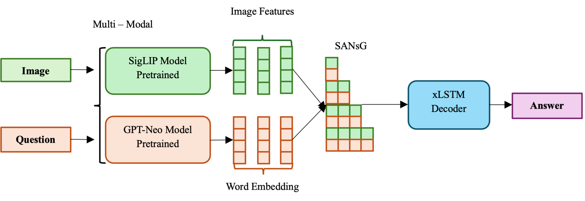
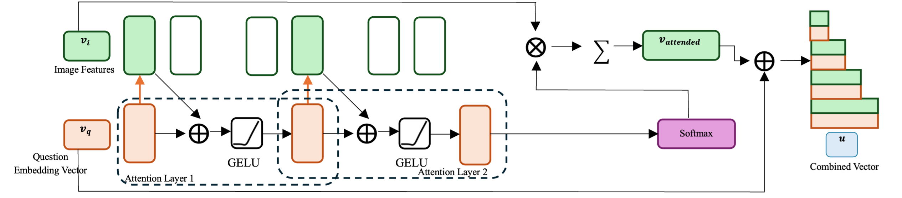
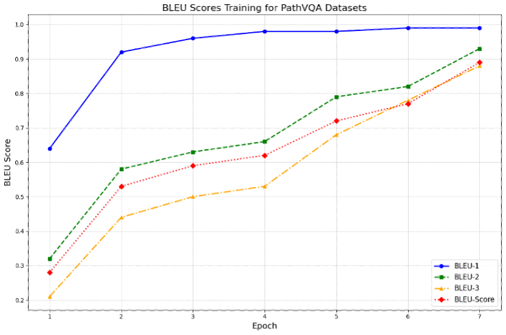
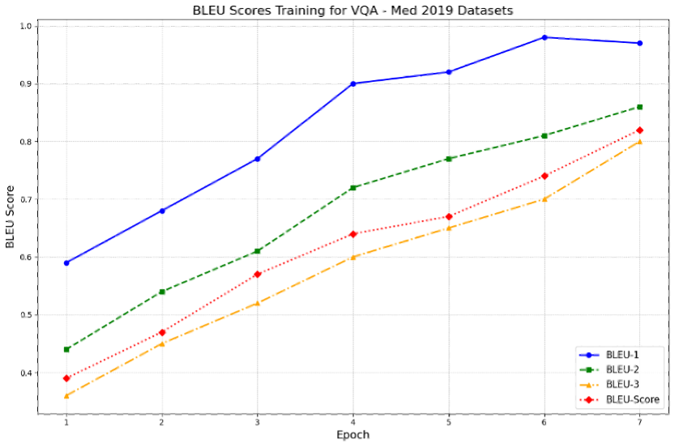
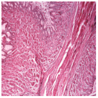
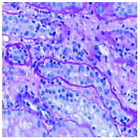
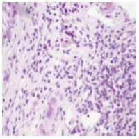
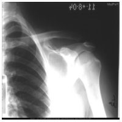
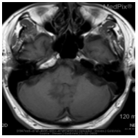
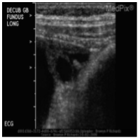

\


Question: where is this from?
Answer: gastrointestinal system
Answer predicted: gastrointestinal system

Question: what are collapsed tubules outlined by?
Answer: wavy basement membranes
Answer predicted: wavy basement membranes

Question: what this image show primary sclerosing cholangitis?
Answer: yes
Answer predicted: yes

Question: what type of imaging modality is used to acquire the image?
Answer: xr - plain film
Answer predicted: xr - plain film

Question: is this noncontrast mri?
Answer: yes
Answer predicted: yes

Question: what is type of imaging is this?
Answer: us - ultrasound
Answer predicted: us - ultrasound